Para computadores com Windows 10 e 11
A Aurea é um programa para o teu computador que junta todo o teu dinheiro num só sítio: as contas do banco, a poupança, o dinheiro da carteira, os créditos e os investimentos. Mostra-te o que aí vem e como vai o mês, sem folhas de cálculo e sem nada na nuvem.
Só para Windows 10 e 11 · Em português, inglês e francês
Património líquido
48 230 €
▲ 1 210 € este mês
No fim do mês
Sobram-te 1 240 €
Já a contar com a renda e a luz
Nos próximos 7 dias
Crédito habitação
Livre em março de 2048
34% já pago
Exemplo com valores fictícios
Descarregas, instalas como qualquer outro programa e crias o teu perfil com uma password só tua. Antes de começares, um tutorial interativo leva-te por cada ecrã com dados de exemplo, para saberes onde está tudo antes de pores lá os teus números.
Tu decides como o teu dinheiro entra na Aurea. Ligas o banco e os saldos e movimentos chegam sozinhos. Ou importas os extratos que descarregas do banco. Ou apontas tudo à mão, ao teu ritmo. Seja qual for a escolha, nunca vemos, guardamos ou enviamos nada teu a ninguém. O objetivo é facilitar-te a vida, não espiar-te.
Num só ecrã vês quanto tens, quanto deves, o que vai sair da conta esta semana e com quanto chegas ao fim do mês. Sem contas de cabeça, sem abrires cinco apps de bancos e sem folhas de cálculo para manter em dia.
Coisas que irritam toda a gente e que a Aurea trata por ti.
Abres o extrato e lês «COMPRA 4589 PDO CONT» ou «TRF SEPA OP 0031». O que foi isto, afinal? Na Aurea dás a cada movimento um nome que percebes à primeira, como «Supermercado» ou «Renda», e a categoria certa. Só tens de o fazer uma vez: a Aurea aprende, e os movimentos iguais que vierem a seguir já chegam com esse nome e essa categoria.
No extrato
Na Aurea
Quantas vezes chegaste ao dia 25 a fazer contas de cabeça? A Aurea junta o que tens, o que ainda vais pagar e o que vais receber, e diz-te já hoje com quanto chegas ao fim do mês. Se não chegar, ficas a saber a tempo de travar.
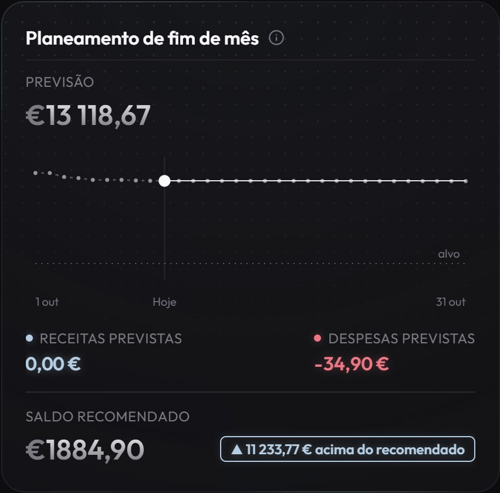
O ginásio, o seguro, o streaming, a renda e o salário aparecem antes de acontecerem. Vês o que vai sair da conta nos próximos dias e acabam-se os «afinal ainda tinha isto para pagar».
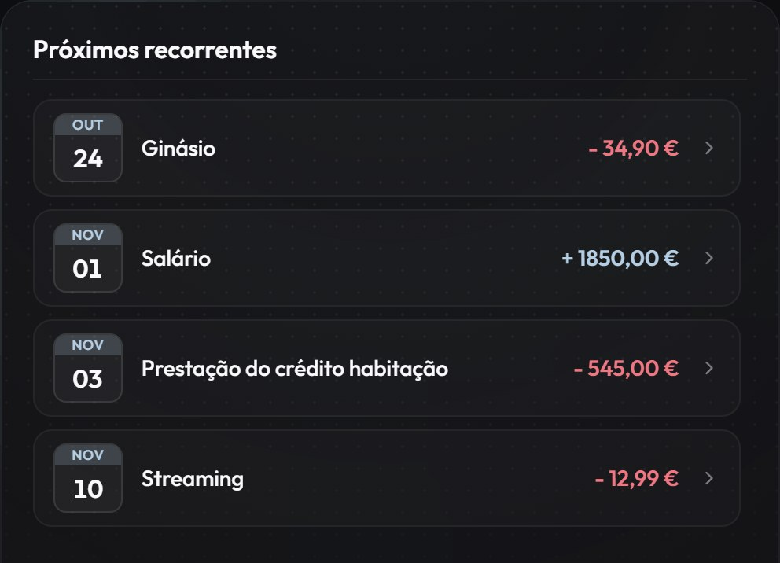
Seja o crédito pessoal, o do telemóvel ou o da habitação: sabes quanto ainda deves, quanto pagas por mês e em que mês ficas livre. Sem ligares para o banco nem procurares o contrato na gaveta.
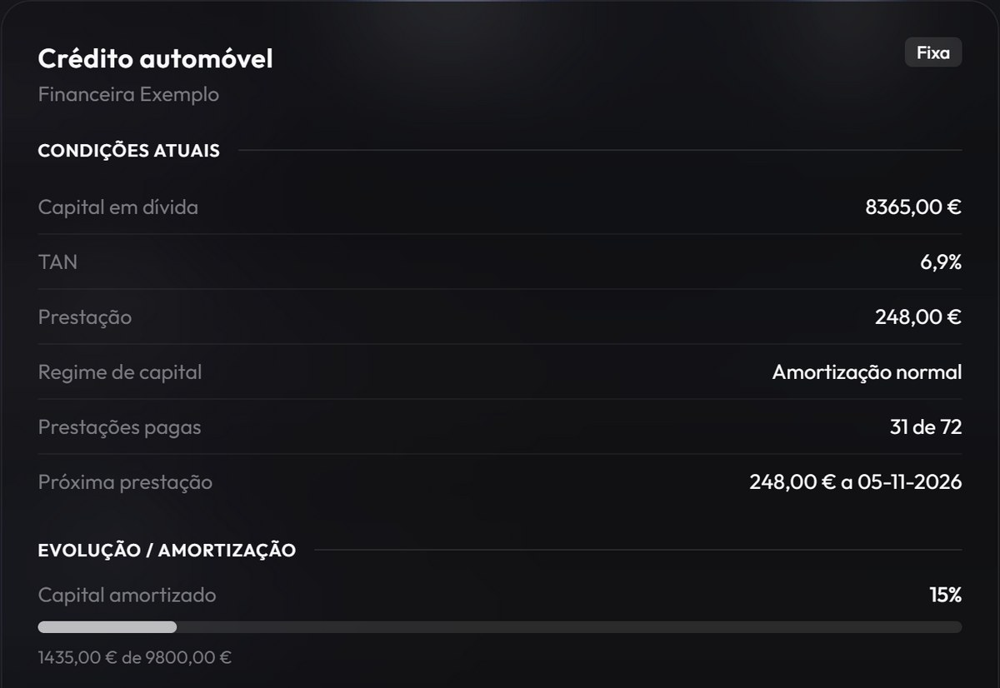
A conta à ordem, a poupança, o cartão refeição, o PPR, as ações e até o dinheiro da carteira, menos o que deves. É o teu património líquido: o número que te mostra se estás mesmo a avançar, mês após mês.
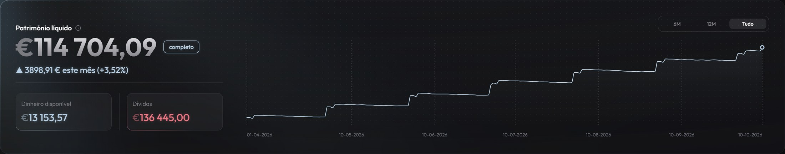
A Aurea olha para o teu dinheiro como um todo: quanto te sobra ao fim do mês, quanto pagas de créditos face ao que ganhas, se estás a poupar e se o teu património está a crescer. Junta tudo numa nota de 0 a 100 e diz-te o que está a correr bem, o que podes melhorar e uma coisa concreta que podes fazer a seguir. Serve para te orientar; não é aconselhamento financeiro.
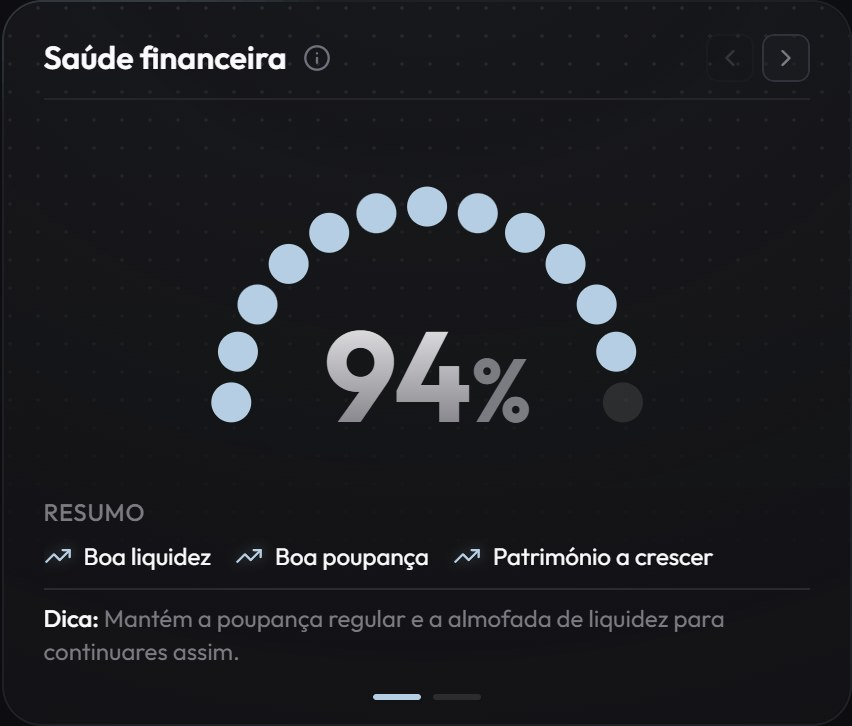
Se tem dinheiro dentro, ou se lhe deves dinheiro, cabe na Aurea.
E muito mais.
Nós não queremos saber nada sobre o teu dinheiro. Por isso a Aurea guarda tudo no teu computador, encriptado com a tua password, e nada passa pelas nossas mãos.
Sem a password, ninguém abre os teus dados. Nem a Aurea.
Não há servidores com os teus dados nem registo online. Está tudo no teu computador.
Se preferires, a Aurea funciona sem internet. Algumas funcionalidades, como a ligação ao banco e as cotações, precisam de ligação.
A Aurea vê os movimentos, mas nunca mexe no teu dinheiro.
Para saberes, sem esforço, como está o teu dinheiro: quanto tens em cada sítio, quanto gastas e em quê, quanto deves, o que vais pagar nos próximos dias e com quanto chegas ao fim do mês. Em vez de abrires a app de cada banco ou de manteres uma folha de cálculo, vês tudo num só sítio, no teu computador.
Todas as que quiseres: contas à ordem e poupanças de qualquer banco, o dinheiro da carteira ou de casa, o cartão refeição, a corretora, os créditos, os investimentos e bens como a casa ou o carro.
Cada conta pode manter-se atualizada de uma de três maneiras: ligada ao banco (os movimentos chegam sozinhos), com os extratos que descarregas do banco e importas, ou com os movimentos que registas à mão.
Não. Instalas a Aurea como qualquer outro programa. Na primeira vez, um tutorial interativo mostra-te cada ecrã com dados de exemplo e explica para que serve cada parte. Se tiveres dúvidas mais tarde, a ajuda dentro da Aurea explica tudo em linguagem simples, passo a passo.
Sim, é normal. Os programas grandes compram um certificado de assinatura digital, e a Aurea ainda não tem um. Por isso, ao instalar, o Windows mostra um ecrã azul que diz «O Windows protegeu o seu PC». Para continuar:
Só acontece na instalação. Depois disso, a Aurea abre normalmente.
Não é obrigatória. Sem internet podes registar movimentos, ver as tuas contas, créditos e bens e planear o mês.
Precisas de internet para:
Sem ligação, a Aurea usa os últimos valores que recebeu e atualiza-os da próxima vez que tiveres internet.
Todos, de uma de três maneiras:
Sim, em toda a Europa. A Aurea trabalha em euros e a ligação automática funciona com a maioria dos bancos europeus. Se tiveres investimentos noutras moedas, como dólares ou libras, a Aurea converte-os para euros ao câmbio do dia.
Sim. A tua chave dá para usar a Aurea em dois computadores ao mesmo tempo, por exemplo o portátil e o computador de casa.
Se trocares de computador, faz assim:
Não há forma de a recuperar. Os teus dados estão encriptados com a tua password, e nem nós conseguimos abri-los: é isso que os protege.
Por isso, escolhe uma password que não esqueças e guarda-a num sítio seguro. Se a perderes, tens de criar um perfil novo.
Não. Por agora, a Aurea é só para computadores com Windows 10 e 11.
Não. A Aurea foi feita para que os teus dados financeiros nunca saiam do teu computador: não há contas na nuvem nem servidores com os teus números. Uma app de telemóvel teria de passar os teus dados de um aparelho para o outro através da nuvem, e isso iria contra a ideia da Aurea. Por isso, a Aurea é e vai continuar a ser um programa para computador.
Como é um conteúdo digital entregue de imediato, ao comprar abdicas do direito de desistência de 14 dias. Se a Aurea não funcionar como descrito, escreve-nos e resolvemos. Vê os Termos de utilização.
Não. A Aurea organiza e mostra os teus números. A nota de saúde financeira e as previsões são indicações calculadas a partir do que registas, não recomendações. A Aurea não aconselha investimentos nem produtos financeiros, e as decisões são sempre tuas. Para decisões importantes, fala com um profissional qualificado.
For Windows 10 and 11 computers
Aurea is a program for your computer that brings all your money together in one place: your bank accounts, savings, the cash in your wallet, loans and investments. It shows you what’s coming and how the month is going, with no spreadsheets and nothing in the cloud.
Windows 10 and 11 only · In English, Portuguese and French
Net worth
€48,230
▲ €1,210 this month
At the end of the month
You’ll have €1,240 left
Rent and electricity already counted
In the next 7 days
Mortgage
Paid off in March 2048
34% already paid
Example with made-up figures
Download it, install it like any other program and create your profile with a password of your own. Before you start, an interactive tour takes you through every screen with sample data, so you know where everything is before you add your own numbers.
You decide how your money gets into Aurea. Link your bank and balances and transactions arrive on their own. Or import the statements you download from your bank. Or write everything down by hand, at your own pace. Whatever you choose, we never see, keep or send anything of yours to anyone. The goal is to make your life easier, not to spy on you.
On one screen you see what you have, what you owe, what leaves your account this week and what you’ll have left at the end of the month. No sums in your head, no opening five banking apps and no spreadsheets to keep up to date.
Things that annoy everyone, and that Aurea takes care of for you.
You open your statement and read “CARD 4589 POS TESCO” or “SEPA TRF OP 0031”. What was that again? In Aurea you give each transaction a name you understand at a glance, like “Groceries” or “Rent”, and the right category. You only do it once: Aurea learns, and the matching transactions that come next arrive with that name and category already.
On your statement
In Aurea
How often have you reached the 25th doing sums in your head? Aurea adds up what you have, what you still have to pay and what’s coming in, and tells you today what you’ll have left at the end of the month. If it won’t be enough, you find out in time to slow down.
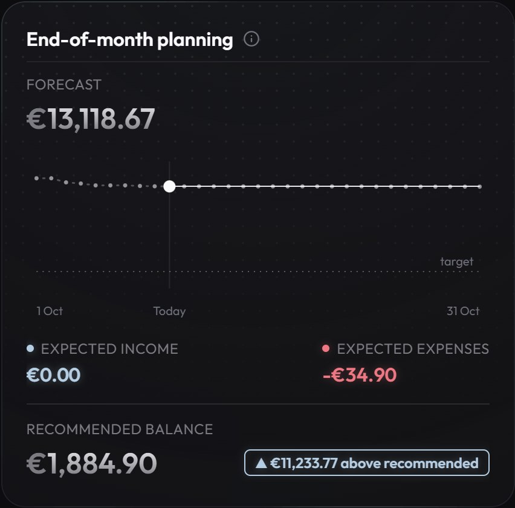
The gym, insurance, streaming, rent and your salary show up before they happen. You see what’s about to leave your account in the coming days, and “oh, I still had that to pay” is a thing of the past.
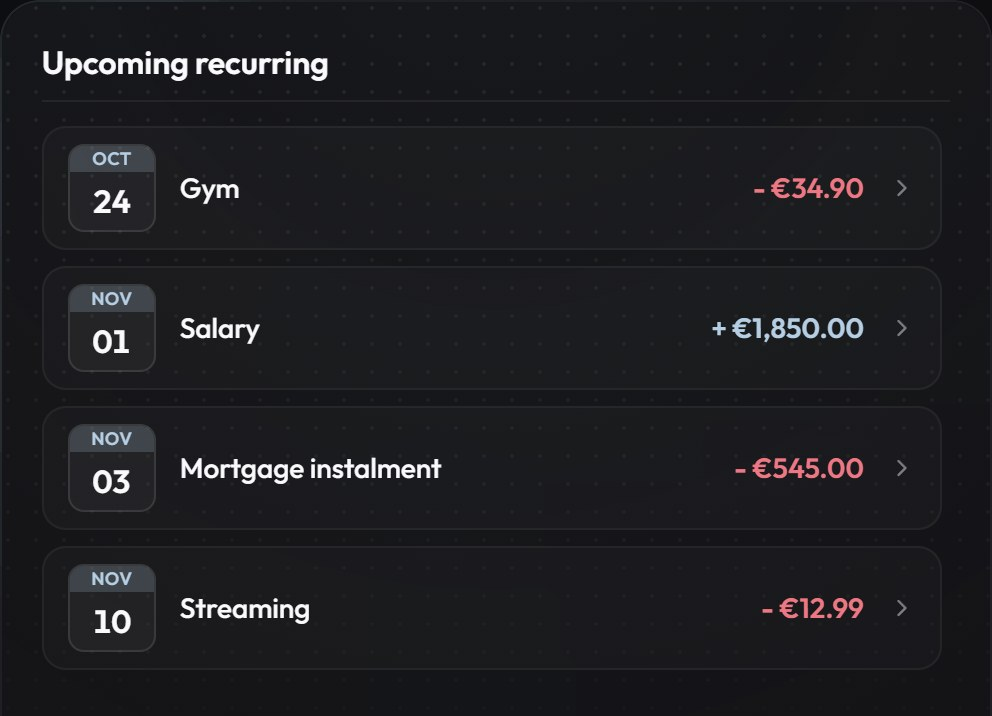
Personal loan, phone instalments or mortgage: you know how much you still owe, how much you pay each month and the month you’ll be free. No calling the bank, no digging for the contract.
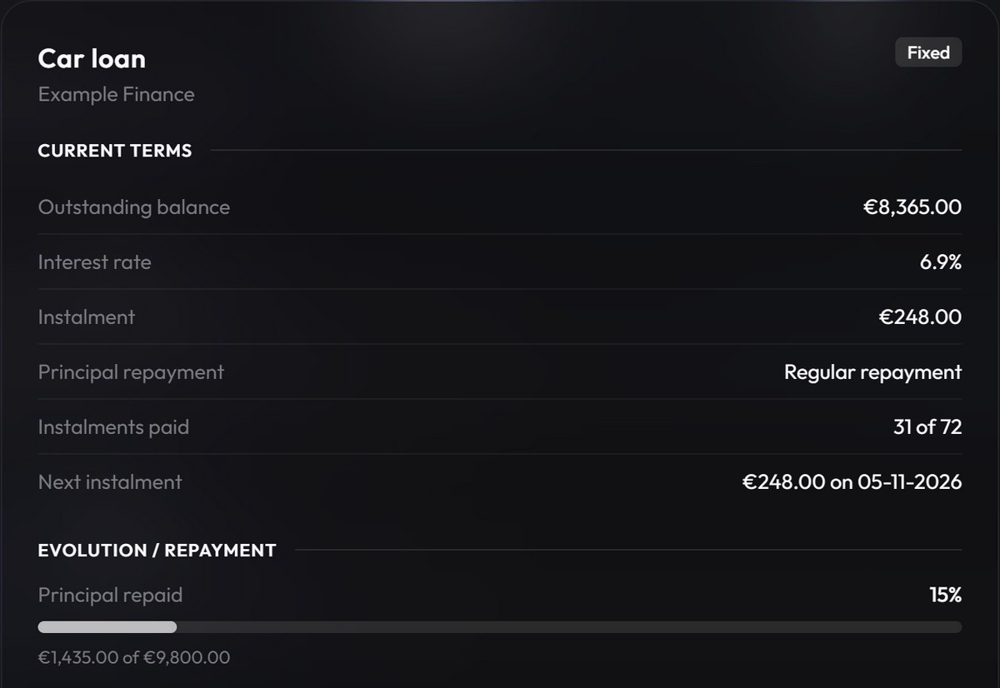
Your current account, savings, meal card, pension plan, shares and even the cash in your wallet, minus what you owe. That’s your net worth: the number that shows whether you’re really moving forward, month after month.
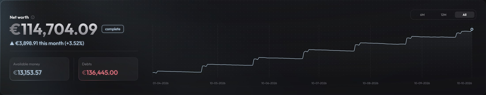
Aurea looks at your money as a whole: what’s left at the end of the month, how much you pay on loans compared with what you earn, whether you’re saving and whether your net worth is growing. It brings it all together in a score from 0 to 100 and tells you what’s going well, what you can improve and one concrete thing you can do next. It’s there to guide you; it isn’t financial advice.
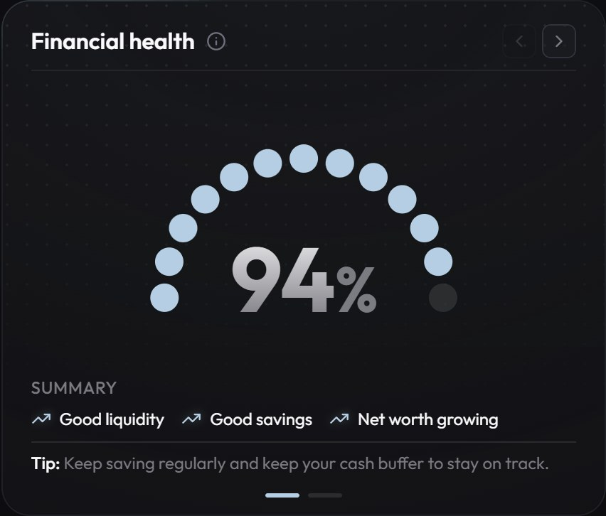
If it holds money, or you owe it money, it fits in Aurea.
And much more.
We don’t want to know anything about your money. That’s why Aurea keeps everything on your computer, encrypted with your password, and nothing ever passes through our hands.
Without your password, nobody can open your data. Not even Aurea.
No servers holding your data and no online sign-up. Everything stays on your computer.
If you prefer, Aurea works without the internet. Some features, such as the bank connection and market prices, need a connection.
Aurea sees your transactions but never touches your money.
For knowing, effortlessly, how your money is doing: how much you have in each place, how much you spend and on what, how much you owe, what you’ll pay in the coming days and what you’ll have left at the end of the month. Instead of opening each bank’s app or keeping a spreadsheet, you see it all in one place, on your computer.
Any you like: current and savings accounts at any bank, the cash in your wallet or at home, your meal card, your broker, loans, investments and things like your home or car.
Each account can be kept up to date in one of three ways: linked to your bank (transactions arrive on their own), with the statements you download from your bank and import, or with the transactions you record by hand.
No. You install Aurea like any other program. The first time, an interactive tour shows you each screen with sample data and explains what every part is for. If you have questions later, the help inside Aurea explains everything in plain language, step by step.
Yes, it’s normal. Big programs buy a digital signing certificate, and Aurea doesn’t have one yet. So when you install it, Windows shows a blue screen saying “Windows protected your PC”. To carry on:
It only happens when installing. After that, Aurea opens normally.
It isn’t required. Offline, you can record transactions, see your accounts, loans and assets, and plan your month.
You need the internet to:
Offline, Aurea uses the last values it received and updates them the next time you’re connected.
All of them, in one of three ways:
Yes, across Europe. Aurea works in euros and the automatic connection works with most European banks. If you hold investments in other currencies, such as dollars or pounds, Aurea converts them to euros at the day’s exchange rate.
Yes. Your key lets you use Aurea on two computers at the same time, for example your laptop and your home computer.
If you change computers, do this:
There’s no way to recover it. Your data is encrypted with your password, and not even we can open it: that’s what keeps it safe.
So choose a password you won’t forget and keep it somewhere safe. If you lose it, you’ll have to create a new profile.
No. For now, Aurea is only for Windows 10 and 11 computers.
No. Aurea is built so your financial data never leaves your computer: there are no cloud accounts and no servers holding your numbers. A phone app would have to move your data from one device to the other through the cloud, which goes against the whole idea of Aurea. So Aurea is, and will stay, a computer program.
Because it’s digital content delivered immediately, you waive the 14-day right of withdrawal when you buy. If Aurea doesn’t work as described, write to us and we’ll sort it out. See the Terms of use.
No. Aurea organises and shows your numbers. The financial health score and the forecasts are indications calculated from what you record, not recommendations. Aurea doesn’t advise on investments or financial products, and the decisions are always yours. For important decisions, talk to a qualified professional.
Pour les ordinateurs sous Windows 10 et 11
Aurea est un programme pour votre ordinateur qui rassemble tout votre argent au même endroit : vos comptes bancaires, votre épargne, l’argent de votre portefeuille, vos crédits et vos placements. Elle vous montre ce qui arrive et comment se passe le mois, sans tableur et sans rien dans le cloud.
Uniquement Windows 10 et 11 · En français, anglais et portugais
Patrimoine net
48 230 €
▲ 1 210 € ce mois-ci
En fin de mois
Il vous restera 1 240 €
Loyer et électricité déjà comptés
Dans les 7 prochains jours
Crédit immobilier
Remboursé en mars 2048
34 % déjà payé
Exemple avec des chiffres fictifs
Téléchargez-la, installez-la comme n’importe quel programme et créez votre profil avec un mot de passe bien à vous. Avant de commencer, un tutoriel interactif vous fait parcourir chaque écran avec des données d’exemple, pour savoir où tout se trouve avant d’y mettre vos chiffres.
C’est vous qui décidez comment votre argent arrive dans Aurea. Reliez votre banque, et soldes et opérations arrivent tout seuls. Ou importez les relevés que vous téléchargez depuis votre banque. Ou notez tout à la main, à votre rythme. Quel que soit votre choix, nous ne voyons, ne gardons et n’envoyons jamais rien de vous à personne. Le but est de vous simplifier la vie, pas de vous espionner.
Sur un seul écran, vous voyez ce que vous avez, ce que vous devez, ce qui quitte votre compte cette semaine et ce qu’il vous restera en fin de mois. Sans calcul de tête, sans ouvrir cinq applications bancaires et sans tableur à tenir à jour.
Des choses qui agacent tout le monde, et dont Aurea s’occupe pour vous.
Vous ouvrez votre relevé et lisez « CB 4589 CARREFOUR » ou « VIR SEPA OP 0031 ». C’était quoi, déjà ? Dans Aurea, vous donnez à chaque opération un nom que vous comprenez du premier coup, comme « Courses » ou « Loyer », et la bonne catégorie. Une seule fois suffit : Aurea apprend, et les opérations identiques qui suivent arrivent déjà avec ce nom et cette catégorie.
Sur le relevé
Dans Aurea
Combien de fois êtes-vous arrivé au 25 en faisant des calculs de tête ? Aurea additionne ce que vous avez, ce qu’il vous reste à payer et ce qui va rentrer, et vous dit dès aujourd’hui ce qu’il vous restera en fin de mois. Si ça ne suffit pas, vous le savez à temps pour freiner.
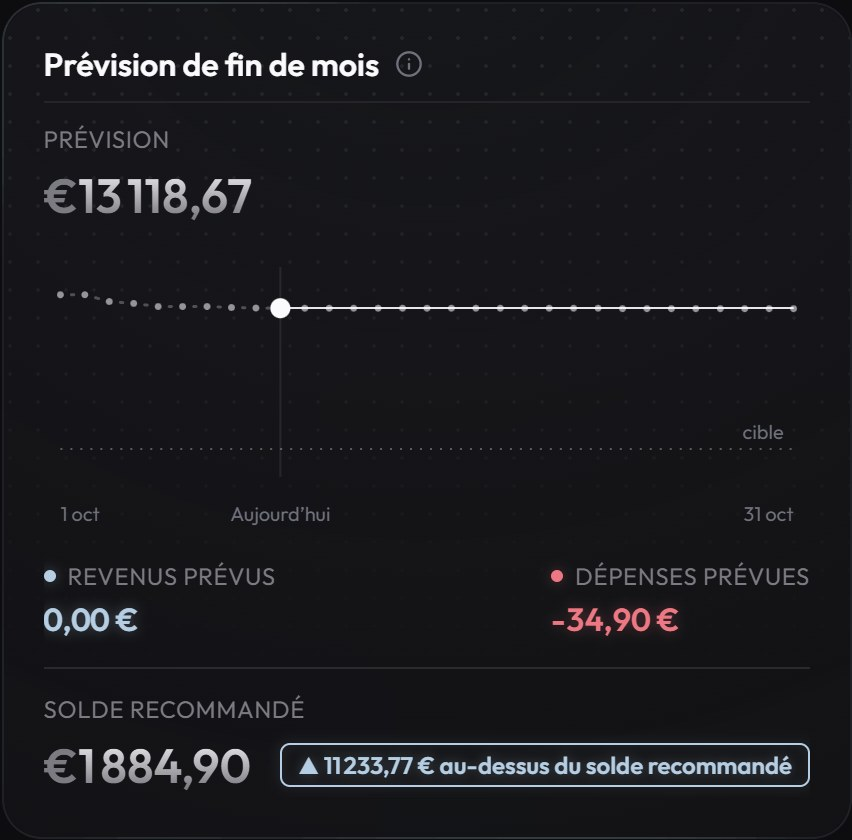
La salle de sport, l’assurance, le streaming, le loyer et le salaire apparaissent avant d’arriver. Vous voyez ce qui va quitter votre compte dans les prochains jours, et c’en est fini des « ah, j’avais encore ça à payer ».
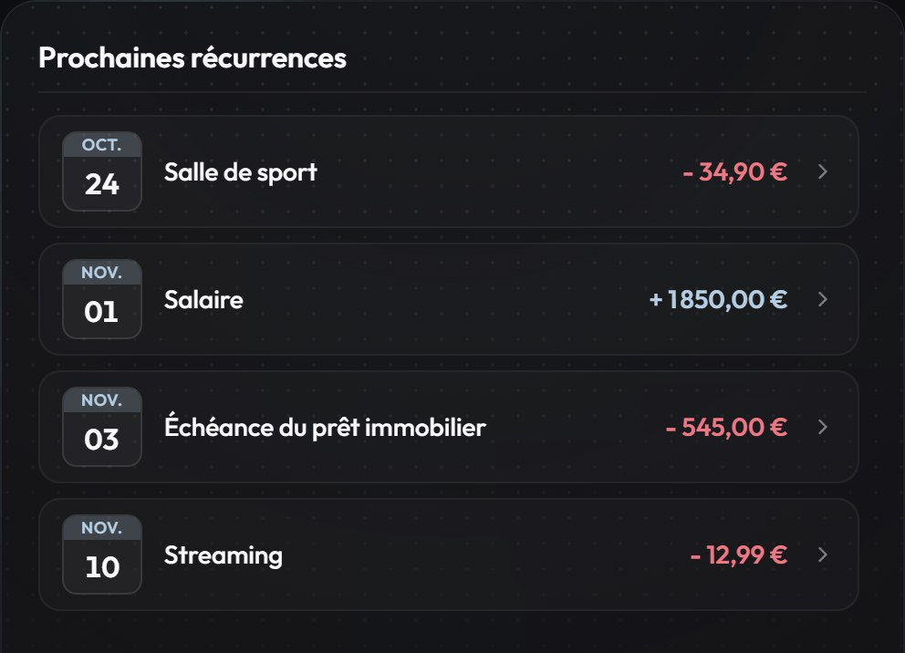
Crédit personnel, téléphone payé en plusieurs fois ou crédit immobilier : vous savez combien vous devez encore, combien vous payez par mois et le mois où vous serez libre. Sans appeler la banque ni chercher le contrat dans un tiroir.
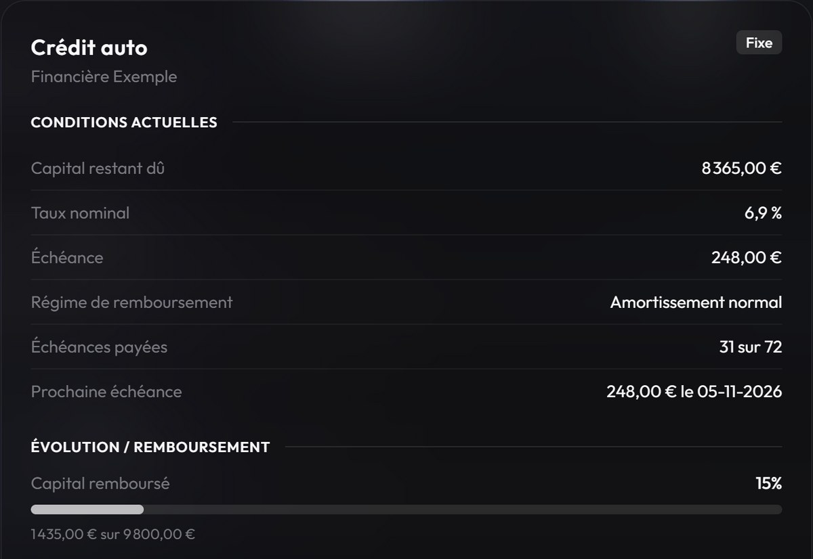
Le compte courant, l’épargne, la carte titre-restaurant, l’épargne retraite, les actions et même l’argent du portefeuille, moins ce que vous devez. C’est votre patrimoine net : le chiffre qui montre si vous avancez vraiment, mois après mois.
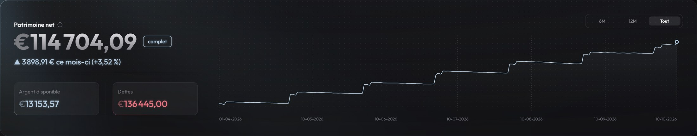
Aurea regarde votre argent dans son ensemble : ce qu’il vous reste en fin de mois, ce que vous payez en crédits par rapport à ce que vous gagnez, si vous épargnez et si votre patrimoine grandit. Elle réunit tout dans une note de 0 à 100 et vous dit ce qui va bien, ce que vous pouvez améliorer et une chose concrète à faire ensuite. C’est un repère, pas un conseil financier.
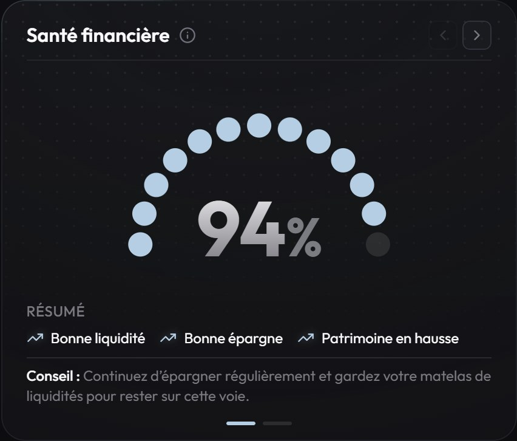
Si ça contient de l’argent, ou si vous lui devez de l’argent, ça a sa place dans Aurea.
Et bien plus encore.
Nous ne voulons rien savoir de votre argent. C’est pourquoi Aurea garde tout sur votre ordinateur, chiffré avec votre mot de passe, et rien ne passe jamais entre nos mains.
Sans votre mot de passe, personne ne peut ouvrir vos données. Pas même Aurea.
Aucun serveur ne garde vos données et aucune inscription en ligne. Tout reste sur votre ordinateur.
Si vous le préférez, Aurea fonctionne sans internet. Certaines fonctions, comme la connexion bancaire et les cours, ont besoin d’une connexion.
Aurea voit vos opérations mais ne touche jamais à votre argent.
À savoir, sans effort, où en est votre argent : combien vous avez à chaque endroit, combien vous dépensez et pour quoi, combien vous devez, ce que vous paierez dans les prochains jours et ce qu’il vous restera en fin de mois. Au lieu d’ouvrir l’application de chaque banque ou de tenir un tableur, vous voyez tout au même endroit, sur votre ordinateur.
Tous ceux que vous voulez : comptes courants et livrets de n’importe quelle banque, l’argent liquide du portefeuille ou de la maison, la carte titre-restaurant, le courtier, les crédits, les placements et des biens comme la maison ou la voiture.
Chaque compte peut être tenu à jour de l’une de trois façons : relié à la banque (les opérations arrivent toutes seules), avec les relevés que vous téléchargez depuis la banque et importez, ou avec les opérations que vous saisissez à la main.
Non. Vous installez Aurea comme n’importe quel programme. La première fois, un tutoriel interactif vous montre chaque écran avec des données d’exemple et explique à quoi sert chaque partie. Si vous avez des questions plus tard, l’aide intégrée explique tout simplement, étape par étape.
Oui, c’est normal. Les grands programmes achètent un certificat de signature numérique, et Aurea n’en a pas encore. À l’installation, Windows affiche donc un écran bleu « Windows a protégé votre ordinateur ». Pour continuer :
Cela n’arrive qu’à l’installation. Ensuite, Aurea s’ouvre normalement.
Ce n’est pas obligatoire. Hors ligne, vous pouvez saisir des opérations, voir vos comptes, crédits et biens et planifier le mois.
Internet est nécessaire pour :
Hors ligne, Aurea utilise les dernières valeurs reçues et les met à jour à votre prochaine connexion.
Toutes, de l’une de trois façons :
Oui, partout en Europe. Aurea fonctionne en euros et la connexion automatique marche avec la plupart des banques européennes. Si vous avez des placements dans d’autres devises, comme le dollar ou la livre, Aurea les convertit en euros au taux du jour.
Oui. Votre clé permet d’utiliser Aurea sur deux ordinateurs en même temps, par exemple le portable et l’ordinateur de la maison.
Si vous changez d’ordinateur :
Il n’y a aucun moyen de le récupérer. Vos données sont chiffrées avec votre mot de passe, et même nous ne pouvons pas les ouvrir : c’est ce qui les protège.
Choisissez donc un mot de passe que vous n’oublierez pas et gardez-le en lieu sûr. Si vous le perdez, il faudra créer un nouveau profil.
Non. Pour l’instant, Aurea est uniquement pour les ordinateurs sous Windows 10 et 11.
Non. Aurea est conçue pour que vos données financières ne quittent jamais votre ordinateur : pas de compte dans le cloud, pas de serveur qui garde vos chiffres. Une application mobile devrait faire passer vos données d’un appareil à l’autre via le cloud, ce qui va à l’encontre de l’idée même d’Aurea. Aurea est donc, et restera, un programme pour ordinateur.
S’agissant d’un contenu numérique fourni immédiatement, vous renoncez au droit de rétractation de 14 jours lors de l’achat. Si Aurea ne fonctionne pas comme décrit, écrivez-nous et nous trouverons une solution. Voir les Conditions d’utilisation.
Non. Aurea organise et affiche vos chiffres. La note de santé financière et les prévisions sont des indications calculées à partir de ce que vous saisissez, pas des recommandations. Aurea ne conseille ni placements ni produits financiers, et les décisions vous appartiennent toujours. Pour les décisions importantes, adressez-vous à un professionnel qualifié.